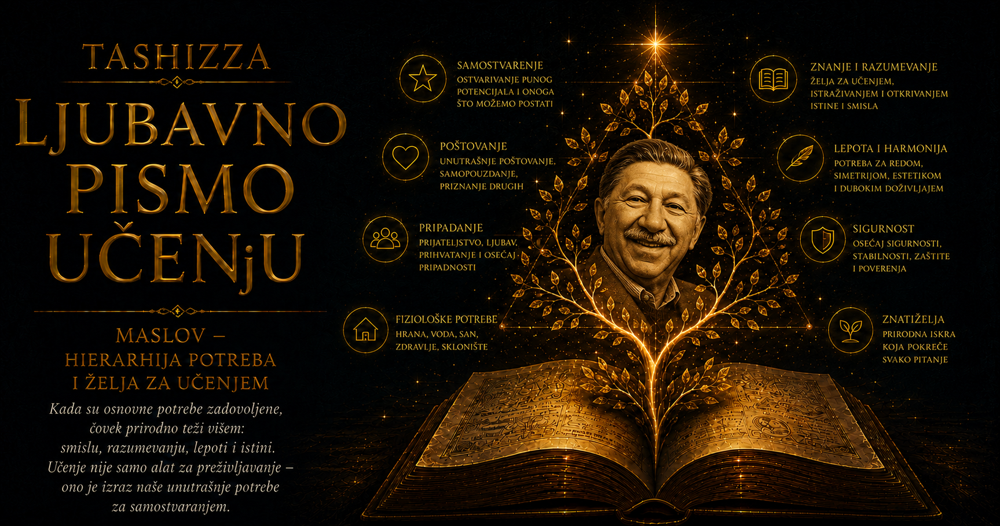

Ljubavno pismo učenju

U vremenu kada je psihologija najčešće proučavala poremećaj, strah, uslovljavanje, agresiju i nesvesne sukobe, Abraham Maslov postavio je pitanje koje je mnogim njegovim kolegama zvučalo gotovo nedovoljno naučno: šta se događa sa čovekom kada mu život uspe? Zanimalo ga je kako izgleda zdrava ličnost, odakle dolaze stvaralaštvo, hrabrost i velikodušnost, zbog čega pojedini ljudi ostaju verni istini i onda kada im to ne donosi korist i šta podstiče čoveka da razvije ono što u sebi naslućuje kao mogućnost. Smatrao je da nauka o čoveku ne može upoznati pun raspon ljudske prirode proučavajući jedino njene povrede, kao što botanika ne bi mogla razumeti život biljaka posmatrajući isključivo primerke kojima nedostaju svetlost, voda i plodno zemljište.
Vera u ljudske mogućnosti izrasla je u čoveku čije detinjstvo nije bilo bezbrižno. Maslov je rođen 1. aprila 1908. godine u Njujorku, kao najstarije od sedmoro dece jevrejskih doseljenika iz tadašnjeg Ruskog carstva. Porodica je u Americi tražila sigurnost posle progona i neizvesnosti istočnoevropskog života. Njegov otac Samjuel, izrađivač buradi i čovek snažne volje, imao je malo formalnog obrazovanja, ali je odlučno zahtevao da ga njegova deca steknu. Majku Rouz Maslov je u kasnijim autobiografskim zapisima opisivao veoma bolno, kao strogu, hladnu i kažnjavajuću ženu od koje nije dobijao nežnost za kojom je čeznuo.
Lične uspomene, posebno one zapisane posle mnogo godina, uvek nose trag temperamenta i kasnijih tumačenja onoga ko ih pripoveda, pa se Maslovljevi opisi porodice moraju čitati sa tom merom opreza. Izvesno je, ipak, da se još kao dečak osećao nevoljeno, neprilagođeno i izloženo. Oca je u mladosti doživljavao kao odsutnog i zastrašujućeg, a tek u zrelijim godinama počeo je da ga razume sa više blagosti; prema majci nikada nije postigao slično pomirenje i nije prisustvovao njenoj sahrani. Potrebe za sigurnošću, pripadanjem i ljubavlju, koje će kasnije zauzeti središnje mesto u njegovoj teoriji, bile su u skrivenom obliku pitanja koja mu je sopstveni život postavio mnogo pre nego što je za njih pronašao stručni jezik.
Ni ulice Bruklina nisu mu pružale utočište. Bio je sitan, povučen i nesiguran dečak, svestan jevrejskog porekla u sredini u kojoj se antisemitizam pojavljivao u uvredama, pretnjama i dečjim sukobima. Kasnije se sećao da su ga progonili i gađali kamenjem, zbog čega je osećanje različitosti postajalo još dublje. Dok su druga deca mesto u grupi sticala fizičkom snagom, sportom i samouverenošću, Abraham se sklanjao među police javnih biblioteka. Knjige su mu ponudile svet uređen idejama i prostor u kome nije morao da se brani, pa je čitao brzo, široko i gotovo opsesivno, kao da obrazovanjem gradi unutrašnju kuću sigurniju od one u kojoj je odrastao.
Mladalačku stidljivost pratila je snažna želja da postane telesno moćniji. Vežbao je i dizao tegove, nadajući se da će mišićavost ukloniti osećanje slabosti i približiti ga predstavi muškosti koju je tada usvojio. Telo nije poslušno pratilo tu zamisao, pa je ostao nežnije građe, sa velikim naočarima i izgledom posvećenog učenika. Iz ove borbe izrasla je jedna važna promena: mladić koji se osećao nedovoljno snažnim počeo je da preispituje samu prirodu snage. Vremenom će ljudsku veličinu sve manje povezivati sa nadmoći nad drugima, a sve više sa samostalnošću, stvaralaštvom, istinoljubivošću, odgovornošću i sposobnošću za saosećanje.
Najvažniji izlaz iz porodične usamljenosti pronašao je u Berti Gudman, svojoj rođaki koju je upoznao u mladosti i kojoj je pomagao da savlada engleski. Njihova bliskost razvijala se uprkos protivljenju porodica, koje su brak među bliskim rođacima smatrale neprihvatljivim i verovale da Abraham još nije spreman za samostalan život. Bertina ljubav pružila je povučenom mladiću, naviknutom da sumnja u sopstvenu vrednost, iskustvo prihvatanja koje će pamtiti kao prelomno. Njihov prvi poljubac opisivao je kao jedan od najuzvišenijih trenutaka svog života, u kome su se radost, olakšanje i osećanje celovitosti nakratko spojili u iskustvo nalik onome što će kasnije nazvati vrhunskim iskustvom.
Venčali su se 1928. godine, protiv volje porodice, a njihov brak postao je jedna od najstabilnijih činjenica Maslovljevog života. Berta je delila sa njim godine skromnog života, selidbe, akademsku neizvesnost, roditeljstvo i zdravstvene krize; dobili su dve kćeri, En i Elen. Maslov je govorio da je brak sa Bertom predstavljao njegovo pravo rođenje, jer je uz nju prvi put osetio da nekome pripada i da može da se odvoji od roditeljskog autoriteta. Kada je kasnije pisao da zadovoljena potreba za ljubavlju oslobađa energiju za samopouzdanje, samostalnost i stvaralaštvo, iza opšte teorije stajalo je lično iskustvo čoveka koji je uz jednu osobu prestao da se oseća kao uljez u sopstvenom životu.
Pre nego što je pronašao psihologiju, pokušao je da ispuni očevu želju i postane pravnik. Pohađao je Siti koledž u Njujorku, a zatim i Univerzitet Kornel, ali ga karijera zasnovana na formalnim pravilima i raspravama o tuđim interesima nije privlačila. Njegov akademski put bio je ispunjen promenama ustanova, razočaranjima i traganjem za oblašću u kojoj bi se radoznalost susrela sa potrebom za smislom. Prekretnica je nastupila kada je sa Bertom otišao na Univerzitet Viskonsina i pronašao psihologiju koja se mogla proučavati posmatranjem, eksperimentom i poređenjem čoveka sa drugim primatima.
Pod vođstvom Harija Harloua, koji još nije bio poznat po svojim kasnijim i duboko kontroverznim ogledima o odvajanju mladunaca od majki, Maslov je proučavao društvenu hijerarhiju, dominaciju i seksualno ponašanje rezus majmuna. Na Viskonsinu je završio osnovne studije, magistraturu i doktorat, stečen 1934. godine. Pojam dominacije za njega je tokom istraživanja postajao složeniji od sirove agresije, jer je obuhvatao sigurnost jedinke koja zauzima prostor bez panike i ne reaguje na svaki izazov kao na pretnju opstanku. Njegovo interesovanje kasnije će se pomeriti prema samopoštovanju i punom razvoju ličnosti, ali će pitanje unutrašnje sigurnosti ostati jedna od trajnih niti njegovog rada.
Posle doktorata radio je sa Edvardom Torndajkom na Univerzitetu Kolumbija. Torndajk, jedan od najuticajnijih američkih istraživača učenja i merenja inteligencije, podvrgao je mladog saradnika svojim testovima i bio zadivljen rezultatima. Za Maslova, koji je dugo sumnjao u sebe, potvrda izuzetne intelektualne sposobnosti dobijena od priznatog autoriteta imala je snažan emocionalni učinak. Istovremeno je upoznavao i granice akademskog sveta u kome se bogatstvo ljudske ličnosti lako sažima u rezultat testa, zbog čega ga je sve snažnije privlačilo proučavanje celovitog čoveka, njegove kulture, ljubavi, moralnosti, stvaralaštva i potrebe za smislom.
Njujork tridesetih godina pružio mu je izuzetno intelektualno okruženje. Pred nacizmom su iz Evrope pristizali naučnici i mislioci, donoseći tradicije koje su američke univerzitete i privatne intelektualne krugove pretvarale u mesta živih susreta. Maslov je upoznao Alfreda Adlera, koji je naglašavao osećanje manje vrednosti, težnju ka prevazilaženju i društvenu povezanost, a sretao je i Eriha Froma, Karen Hornaj i druge psihoanalitičare zainteresovane za odnose između ličnosti, kulture i slobode. Od geštalt psihologa učio je da celina poseduje osobine koje se gube kada je rastavimo na izdvojene delove, dok je od antropologa preuzimao oprez prema teorijama koje iskustvo jedne kulture proglašavaju merom čitavog čovečanstva.
Dve ličnosti naročito su uticale na nastanak njegove psihologije: antropološkinja Rut Benedikt i geštalt psiholog Maks Verthajmer. Maslov ih je cenio zbog originalnosti, intelektualne ozbiljnosti, smirenosti, spontanosti i posvećenosti problemima većim od lične koristi. Počeo je da beleži njihove osobine, gotovo poput prirodnjaka koji je naišao na retke primere psihološkog zdravlja. Iz tog neobičnog posmatranja razvilo se pitanje koje će odrediti njegov rad: kakvu bismo sliku ljudske prirode dobili kada bismo teoriju gradili proučavajući zdrave, stvaralačke i moralno samostalne ljude?
Tragajući za odgovorom, proučavao je žive poznanike, istorijske ličnosti i biografije ljudi koje je smatrao izuzetno razvijenim, među njima Abrahama Linkolna, Tomasa Džefersona, Alberta Ajnštajna, Vilijama Džejmsa, Baruha Spinozu, Eleonoru Ruzvelt, Džejn Adams i Oldosa Hakslija. Metod je bio smeo, plodan i metodološki ranjiv, jer je Maslov unapred birao ljude koji su odgovarali njegovom osećanju veličine, a zatim među njima tražio zajedničke osobine. Uzorak je bio mali, kulturno uzak i sastavljen uglavnom od obrazovanih zapadnih ličnosti, pa su rezultati delom odražavali i istraživačevu predstavu dobrog čoveka. Maslov je svoj rad smatrao početnim istraživanjem, ali je njime otvorio važno pitanje o osobinama koje ljudi razvijaju kada najveći deo njihove energije više nije zarobljen u odbrani od opasnosti i poniženja.
Od neurologa Kurta Goldštajna preuzeo je pojam samoaktualizacije i razvio ga u opis potrebe da sposobnosti, talenti i unutrašnji pozivi dobiju stvaran oblik. Ljudi koje je proučavao često su bili posvećeni naučnom pitanju, društvenoj pravdi, umetničkom delu, obrazovanju ili služenju zajednici. Stvarnost su prihvatali sa manje odbrambenih iskrivljenja, lakše podnosili neizvesnost, oslanjali se na sopstveni sud i čuvali svežinu opažanja. Njihova spontanost proisticala je iz manje potrebe da neprekidno igraju društveno odobrenu ulogu, dok se zrelost ogledala u sposobnosti da priznaju neprijatnu činjenicu, usredsrede se na zadatak i menjaju se pod uticajem iskustva.
Maslov ih nije pretvarao u svece bez mana. Zreli ljudi u njegovim opisima mogli su biti tvrdoglavi, nagli, rasejani, dosadni ili neobzirni u svakodnevnim sitnicama, a povremeno su osećali krivicu, tugu, sumnju i unutrašnji sukob. Njihova energija ipak nije bila neprekidno zarobljena u dokazivanju lične vrednosti. Često su imali mali broj dubokih odnosa umesto mnoštva površnih poznanstava, umeli da ostanu sami bez osećanja napuštenosti i mogli da se posvete problemu čiji značaj prevazilazi njihov ugled.
Drugi svetski rat dao je njegovom radu istorijsku hitnost. Posmatrao je uspon fašizma, progon evropskih Jevreja, razaranje gradova i pretvaranje savremenog znanja u sredstvo masovnog ubijanja. Prema kasnijem sećanju, prizor patriotske parade u prvim godinama američkog učešća u ratu probudio je u njemu odluku da svoj rad posveti razumevanju mržnje, predrasuda i psiholoških uslova mira. Njegova humanistička psihologija izrasla je iz vere u ljudske mogućnosti, ali i iz svesti da se potrebe za sigurnošću i pripadanjem mogu zloupotrebiti: autoritarni pokret uplašenom pojedincu nudi red, identitet i grupnu nadmoć, tražeći zauzvrat poslušnost i mržnju prema drugačijima.
Kada je 1951. godine prešao na novoosnovani Univerzitet Brandejs, Maslov je dobio priliku da razvija odsek psihologije otvoren prema susretu eksperimentalnih istraživanja, proučavanja ličnosti, društvenih pitanja i filozofije. Tamo je predavao skoro dve decenije, a studenti i saradnici pamtili su ga kao toplog, duhovitog i podsticajnog predavača, ali i čoveka snažnih raspoloženja, osetljivog na površnost, administraciju i kritiku koju je doživljavao kao nerazumevanje. U dnevnicima je naizmenično beležio osećanje velike misije i strah da će ga akademska psihologija odbaciti kao nedovoljno strogog. U njemu su zajedno živeli povređeni dečak koji traži potvrdu i ambiciozni mislilac uveren da njegova disciplina previđa sopstvenu najvažniju temu.
Humanističku psihologiju nazivao je „trećom silom”, pravcem koji je uz bihevioristička i psihoanalitička saznanja želeo da uključi izbor, odgovornost, smisao, stvaralaštvo, ljubav i psihološko zdravlje. Među najvažnijim saveznicima bio mu je Karl Rodžers, čija je terapija usmerena na osobu počivala na poverenju u sposobnost rasta unutar odnosa koji pruža iskrenost, empatiju i prihvatanje. Njihov optimizam ponekad je površno tumačen kao vera u automatsku ljudsku dobrotu, iako su obojica dobro razumeli da poniženje, strah i uslovljena ljubav mogu oslabiti, izobličiti ili preusmeriti čovekove razvojne mogućnosti.
Posebno mesto u Maslovljevom radu zauzela su vrhunska iskustva, trenuci u kojima se doživljaj vremena menja, granice ega slabe, a svet se opaža sa izuzetnom jasnoćom, zahvalnošću i prisutnošću. Takvi trenuci mogli su se javiti pri slušanju muzike, rođenju deteta, naučnom otkriću, ljubavi, molitvi, planinarenju ili stvaralačkom radu. Maslov je želeo da ih proučava bez svođenja na bolest i bez obaveze da se tumače kao dokaz određene teologije. Smatrao je da strahopoštovanje, zanos i osećanje svetosti pripadaju legitimnim iskustvima naučnika, umetnika, vernika i ateista, pa ih psihologija može istraživati kao deo ljudske prirode.
Kasnije je opisivao i mirnija, trajnija iskustva koja je nazivao iskustvima visoravni. Dok vrhunski trenutak podseća na iznenadni bljesak iznad svakodnevice, iskustvo visoravni izražava stabilniju sposobnost da se obično drvo, nebo, razgovor ili lice bliske osobe dožive sa dubokim osećanjem dragocenosti. U toj tišoj svesti video je zreliji oblik transcendencije, manje zavisan od uzbuđenja i potpunije uključen u svakodnevni život. Njegovo interesovanje za istinu, lepotu, pravičnost, celovitost i smisleni red dovelo ga je i do ideje da čovek može patiti u materijalno obezbeđenoj sredini ako je svakodnevno izložen laži, ružnoći, besmislu i poniženju.
Maslov je u nauku unosio reči koje su mnogim akademskim psiholozima zvučale neobično: dostojanstvo, plemenitost, svetost, veličina i čuđenje. Pojedine kolege smatrale su ga romantičarem koji filozofske želje predstavlja kao naučne nalaze, dok je on upozoravao da i istraživač poseduje karakter, vrednosti, strahove i slepe tačke. Nauka sama ne bira pitanja; ljudi odlučuju koje pojave smatraju važnim i koje metode prihvataju kao legitimne. Njegova opomena poznata kao „Maslovljev čekić” odnosila se upravo na metodološku skučenost: čovek koji raspolaže samo čekićem lako počinje da svaki problem vidi kao ekser.
U knjizi „Psihologija nauke” tvrdio je da istraživački stil zavisi i od ličnosti naučnika. Nesiguran istraživač može tražiti savršenu kontrolu, izbegavati rizična pitanja i braniti poznatu paradigmu zato što mu pruža psihološku sigurnost, dok stvaralački duh lakše podnosi dvosmislenost, privremenu zbrku i mogućnost da će omiljena teorija propasti. Maslov je zagovarao nauku dovoljno strogu da proverava sopstvene tvrdnje i dovoljno otvorenu da važno iskustvo ne odstrani iz vidokruga samo zato što još nije pronašla precizan način da ga izmeri.
Njegov nemir proširio se sa psihologije pojedinca na pitanje kakve ljude stvaraju ustanove. Zamišljao je „eupsihiju”, dobro društvo u kome škole ne gase radoznalost, preduzeća ne tretiraju zaposlene kao zamenljive delove, a političke ustanove ne grade moć ponižavanjem građana. U knjizi „Eupsihijsko upravljanje” razmatrao je kako poverenje, odgovornost i razumevanje smisla rada mogu osloboditi inicijativu zaposlenih. Istovremeno je prepoznavao opasnost od zloupotrebe jezika samoaktualizacije kada organizacija od čoveka zahteva predanost, kreativnost i „lični rast”, dok mu uskraćuje sigurnost, pravičnost i stvarno učešće u odlučivanju.
Maslov je strepeo da bi samoaktualizacija u popularnoj kulturi mogla postati opravdanje za narcizam, impulsivnost i odbacivanje odgovornosti. Pun razvoj ličnosti za njega je zahtevao disciplinu, rad, sposobnost podnošenja nelagodnosti i vernost vrednostima. Muzičar ostvaruje svoj dar godinama vežbajući, naučnik prihvata činjenice koje ruše njegovu teoriju, a roditelj svoje najbolje mogućnosti ponekad razvija upravo kroz odgovornost koja ograničava njegovu neposrednu slobodu. Sloboda je u ovom razumevanju imala dubinu samo kada je bila povezana sa sposobnošću da se izabere ono što je vredno i onda kada je zahtevno.
Posebno ga je zanimalo zbog čega ljudi beže od sopstvenih mogućnosti. Taj strah nazvao je Joninim kompleksom, prema biblijskom proroku koji je pokušao da izbegne poziv koji mu je poveren. Veliki zadatak može biti zastrašujući gotovo koliko i veliki neuspeh, jer prihvatanje sopstvenog dara donosi odgovornost, mogućnost zavisti, izdvajanje iz poznate grupe i rizik da čovek neće dorasti sopstvenoj viziji. Maslov je ovaj mehanizam dobro poznavao iz ličnog iskustva: oscilovao je između uverenja da učestvuje u stvaranju nove psihologije i straha da će biti proglašen neozbiljnim, pa je njegova teorija rasta nastajala kroz pokušaj da razume kako se čovek kreće uprkos sopstvenoj nesigurnosti.
Zdravlje mu je s vremenom postajalo ozbiljno ograničenje. Godine 1967. doživeo je težak srčani udar, posle koga je postao svesniji prolaznosti vremena, zahvalniji prema običnim trenucima i manje spreman da energiju troši na akademske sukobe. Iste godine izabran je za predsednika Američkog psihološkog udruženja, čime je čovek koji se dugo osećao na rubu glavnih tokova discipline dobio njeno veliko institucionalno priznanje. Njegova nekadašnja „treća sila” stekla je širok uticaj, dok je on već pomerao težište sa samoaktualizacije prema samotranscendenciji i sposobnosti da se lični darovi posvete ljubavi, znanju, stvaralaštvu i služenju široj celini.
Godine 1969. povukao se sa Brandejsa i preselio u Kaliforniju, gde je u Institutu Laflin dobio mirnije uslove za pisanje. Osećao je bliskost sa tamošnjim interesovanjem za ljudske mogućnosti, duhovnost i nove oblike zajednice, ali je ostajao oprezan prema površnim obećanjima trenutnog prosvetljenja. Punina života za njega nije bila roba koja se stiče jednim seminarom ni trajno stanje blaženstva, jer se razvoj odvija kroz mnogobrojne izbore u kojima čovek daje prednost istini nad utehom, rastu nad povlačenjem i odgovornosti nad izgovorom.
Umro je 8. juna 1970. godine u Menlo Parku, u šezdeset drugoj godini, od srčanog udara koji ga je zadesio tokom laganog vežbanja. Smrt je došla u času kada je njegov rad prerastao psihologiju samoaktualizacije i kretao se prema široj teoriji transcendencije, vrednosti i ljudske odgovornosti. Poslednji radovi, beleške i predavanja objavljeni su posthumno u knjizi „Dalji dometi ljudske prirode”, čiji naslov precizno izražava nameru koja ga je pratila čitavog života: da istraži do čega čovek može dosegnuti kada ga psihologija posmatra u punom rasponu njegovih rana, potreba, mogućnosti i najviših težnji.
Njegovo nasleđe ostalo je veliko, plodno i protivrečno. Hijerarhija potreba postala je jedan od najprepoznatljivijih psiholoških modela, ali ju je popularnost često udaljavala od autora, pretvarajući pokretljivu teoriju u strogu piramidu i samoaktualizaciju u nagradu za materijalni uspeh. Naučna kritika opravdano je ukazala na subjektivan izbor proučavanih ličnosti, teškoće merenja i kulturnu ograničenost redosleda potreba. Maslovljeva trajnija vrednost nalazi se u promeni pravca pogleda: psihologiji je pomogao da ozbiljno istražuje zdravlje, stvaralaštvo, smisao, unutrašnju motivaciju i uslove u kojima ljudi mogu razviti svoje sposobnosti.
Maslovljeva originalnost izrasla je iz sposobnosti da poveže uvide koje su različite škole držale razdvojenim. Od biheviorizma je zadržao poštovanje prema opažanju i eksperimentu, od psihoanalize razumevanje unutrašnjih sukoba i ranog iskustva, od Adlera društvenu prirodu čoveka, od Goldštajna težnju organizma prema celovitosti, od geštalt psihologije prvenstvo celine, a od antropologije svest o kulturnoj raznolikosti. Rut Benedikt i Maks Verthajmer pružili su mu žive primere zrelosti, dok su mu sopstveni strahovi pokazivali koliko je razvoj krhak i koliko zavisi od uslova u kojima čovek živi.
Iza čuvene teorije ostaje čovek koji je čitavog života pokušavao da razume početno iskustvo nepripadanja. Dečak progonjen na ulicama Bruklina počeo je da razmišlja o sigurnosti; sin koji je čeznuo za toplinom stavio je ljubav među osnovne ljudske potrebe; mladić koji se stideo tela proučavao je dominaciju i samopoštovanje; suprug koji je uz Bertu osetio prihvaćenost razumeo je kako bliskost oslobađa energiju za rast; naučnik nesiguran pred autoritetima opisao je strah od sopstvene veličine; čovek sa bolesnim srcem pisao je o trenucima u kojima se svakodnevni život otkriva kao neprocenjivo dragocen.
Maslov nije obećavao život bez bola, niti je ljudsku ranjivost pokušavao da ukloni jednostavnom porukom pozitivnog mišljenja. Verovao je da se ljudske mogućnosti lako guše strahom, oskudicom, poniženjem i lošim ustanovama, ali i da se mogu razvijati u uslovima ljubavi, slobode, odgovornosti i istine. Društvo je, prema tom merilu, odgovorno i za osobine koje podstiče u svojim članovima: može hraniti poslušnost, zavist i strah od različitosti, a može otvoriti prostor za samostalnost, saradnju, savest, radoznalost i stvaralački rizik.
Trajna snaga njegove potrage nalazi se u pitanju šta činimo sa energijom koja se oslobodi kada prestanemo da budemo potpuno zaokupljeni opstankom, strahom i tuđim priznanjem. Možemo je potrošiti na gomilanje još veće sigurnosti i moći, a možemo je pretvoriti u učenje, stvaranje, ljubav i služenje nečemu vrednom. Maslovljev život podseća da vera u ljudske mogućnosti zahteva jasan pogled na ljudske slabosti i hrabrost da se te slabosti ne proglase konačnom merom čoveka.
Njegova hijerarhija, oslobođena krute piramide, može se čitati kao ljubavno pismo mogućem čoveku. Na njenom početku nalazi se telo koje traži hranu i zaklon, zatim biće koje čezne za sigurnošću, srce koje traži pripadanje, ličnost kojoj je potrebno dostojanstvo i stvaralac koji pokušava da svom daru pronađe oblik. Na njenim daljim dometima pojavljuje se čovek sposoban da prevaziđe usku zaokupljenost sobom i svoj život poveže sa istinom, lepotom, pravdom i brigom za druge. Maslov je znao da se tim putem krećemo nesigurno, sa zastajanjima, strahovima i povratkom starim ranama, ali je istrajao u uverenju da taj put postoji.